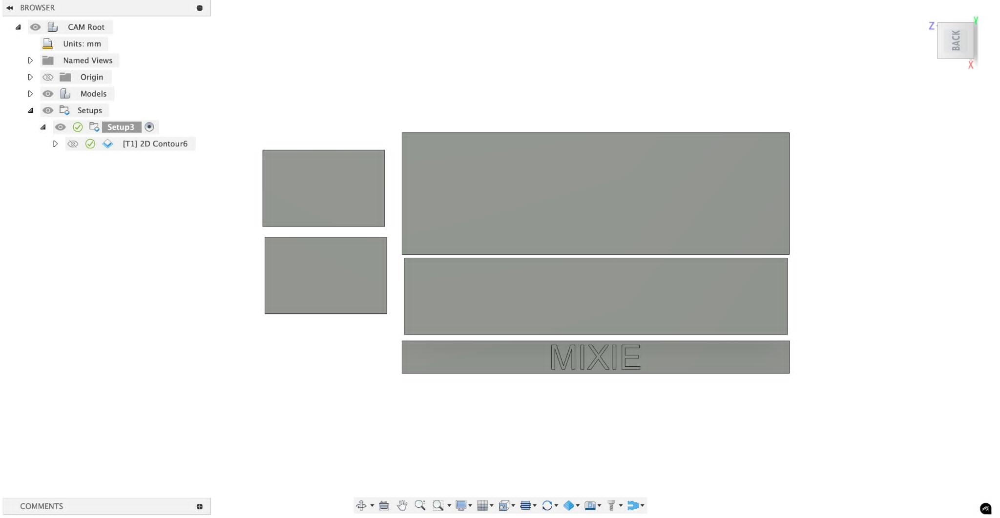

Final Project – Mixie Cocktail Pourer
(Group project – Shop Bot CNC build)
üìå Overview
As our capstone for VÉL608G – Tölvustudd framleiðsla we built a Mixie cocktail pourer: a bar shelf that auto-dispenses spirits via a stepper-driven slide mechanism. The wooden frame was milled from 18 mm spruce plywood on the Shop Bot CNC; electronics and firmware are handled in another course, but every subtractive-manufacturing step is documented here.
üèóÔ∏è Fusion 360 Design Process
We modelled the frame in Fusion 360 with a layered, parametric approach:
- Sketched the logo/box, then converted each piece to a solid body.
- All dado slots driven by a single
MatThk = 18 mmparameter. - Mirrored leaves and filleted edges for cleaner looks.
Biggest headache: we first drew everything for 6 mm stock, discovered our plywood was 18 mm, and had to re-parameterise the entire model.
üîß CAM & Toolpaths
| Shop Bot setup | |
|---|---|
| Tool | 6 mm 2-flute flat end-mill |
| Spindle speed | 14 000 rpm |
| Cutting feed | 3 000 mm / min |
| Plunge feed | 333 mm / min |
| Toolpaths |
2D Contour × 1 (outer profile) 2D Pocket × 1 (engraved MIXIE logo) |
ü™ì Fabrication Process
- Screwed 18 mm plywood to Shop Bot bed.
- Ran CAM job – total machine time ≈ 18 min.
- Forgot bottle holes → drilled 32 mm holes afterward.
- Sanded, spray-painted neon pink + blue graffiti, then nailed & glued panels.
⚠️ Challenges & Solutions
| Challenge | Solution |
|---|---|
| Wrong stock thickness | Re-parameterised model; regenerated toolpaths. |
| Missed bottle cut-outs | Hand-drilled after CNC pass. |
| Plywood tear-out | Raised spindle speed & added climb-cut finishing pass. |
üì∏ Results & Next Steps
The frame is sturdy, logo engraving is crisp, and the slide mechanism (assembled in the parallel electronics course) fits perfectly. Next: wire the pumps and run a live cocktail demo.
üí° Lessons Learned
- Always verify material thickness before CAM.
- A shared Trello board kept the group on schedule.
- Proper feeds & speeds improve finish and tool life.
Thank you
This was my final project in this course, thank you for checking out my site, I hope you liked it. HAPPY SUMMER!